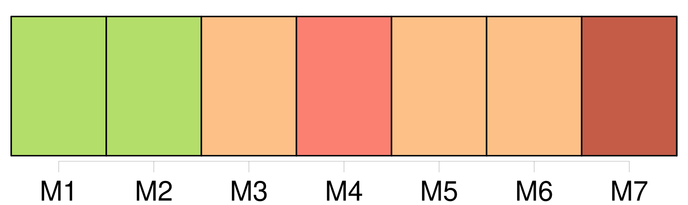
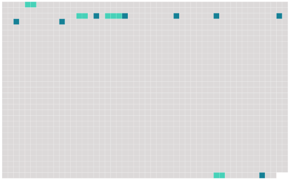

Longueur nb maillons : 12 mentions |
 |
J'enverrai à Rouen [XXXLe DevoirXXX] , qui nous ramènera des dames ; je sais où les prendre. [3 phrases]
»
[C'] était [un vieux sous-officier] [qu'] on n'avait jamais vu rire, mais [qui] accomplissait fanatiquement tous les ordres de [ses] chefs, quels qu'ils fussent.
Debout, avec [sa] figure impassible, [il] reçut les instructions du baron, puis [il] sortit ; et, cinq minutes plus tard, une grande voiture du train militaire, couverte d'une bâche de meunier tendue en dôme, détalait sous la pluie acharnée, au galop de quatre chevaux. [43 phrases]
Et cinq femmes descendirent sur le perron, cinq belles filles choisies avec soin par un camarade du capitaine à qui [XXXLe DevoirXXX] était allé porter une carte de [son] officier. |
 |
Il est possible de télécharger la ressource sur la page Ortolang |
Si vous avez des questions ou vous voyez des erreurs, merci d'envoyer un mail à silvia.federzoni89@gmail.com |